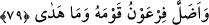

gömüp boğuverdi.
“Bunun üzerine o, askerleri ile birlikte onların peşine düştü.” Hz. Mûsâ kendisine
emredilenleri yaptı. İsrailoğullarını geceleyin gizlice Mısır’dan çıkartıp yürüttü.
Denizde yol açtı ve o yolda yürüdü. Fir’avn da askerleriyle birlikte onları takip etti ve
işrak vaktinde, yani güneş ortalığı aydınlattığı vakit ordusu ile onlara yetişmişti.
Rivayet olunur ki Mûsâ (a.s.) gecenin evvelinde İsrâiloğulları ile birlikte Mısır’dan
çıktı. Altı yüz yetmiş bin kişi idiler. Fir’avn bunu haber alınca askerleriyle birlikte
onları tâkibe koyuldu. Hz. Mûsâ’yı tâkip eden ordunun öncüleri yedi yüz bin kişi idi.
Fir’avn ordusu ile birlikte, onların izini tâkib etti ve iki topluluk birbirini görecek
şekilde onlara yetişti. İşte o zaman Mûsâ (a.s.) asâsını denize vurdu. Denizde on iki yol
açıldı. Bu on iki yoldan her bir bölük koca bir dağ gibi oldu. (bk. eş-Şuarâ, 26/63)
Denizin suyu açılan bu yolların arasında kaldı. Hz. Mûsâ ile beraberindeki kabileler
güvenle o yollardan geçip gittiler. Fir’avn da ordusu ile onları takip etti.
“Deniz onları gömüp boğuverdi.” Kızıldeniz’in künhünü Allah’tan başkası
bilemediği azgın dalgalar, onları örttü ve üzerlerine çıktı ve içine alıp boğdu.
79. Fir’avn, kavmini saptırdı, doğru yola sevketmedi.
“Fir’avn, kavmini saptırdı,” Onları, sonu dînî ve dünyevî açıdan mahrûmiyet ve
hüsran olan bir yola sevk etti. Çünkü korkunç bir dünyevî azapla can verdiler, ebedî
uhrevî azâbı da hak ettiler.
“Doğru yola sevketmedi.” Onları dini ve dünyevî açıdan istediklerini elde
edebilecekleri bir yola asla ulaştıramadı. Bu onları saptırdığının belirtilmesi ve
tekididir. Çünkü nice yoldan çıkaran kimse vardır ki saptırdığı kimseleri bazı arzularına
ulaştırır.
Bu âyette Fir‘avn’un: “Ben sizi ancak doğru yola götürüyorum.” (el-Mü’min,
40/29) sözü ile bir tür alay söz konusudur. Genel olarak kendisinden hidâyet tasavvur
olunan kimselerden olduğunu hissettiren bir kimsede hidâyet olmadığının bildirilmesi,
hidâyetin onda ancak alay yoluyla tasavvur edilebileceği anlamına gelir.
Fakir (Bursevî) der ki: “Mûsâ (a.s.) kavmi ile birlikte, kuvvetleri ile beraber olan
kudsî rûha işârettir. Kavmi ile Fir’avn da nefs-i emmâre ile kuvvetlerine işârettir.
“Deniz”den murad, dünya denizidir. Ruh Mûsâ’sı o denizi ya şeriat gemisi ile ya da
ilâhî keşf nûru ile geçer. Nefs Fir’avn’u ise boğulur. Çünkü o, kendi hevâsına tâbîdir.
Şerîatı da keşfi de yoktur. Buradan anlaşıldı ki enfüs ve âfâk bakımından dalâlet ehline
tâbi olmak, sûrî ve mânevî helâke götürür. Hidayet ehline uymak ise ebedî kurtuluşa
erdirir.
Sakın ha sakın kötü arkadaştan